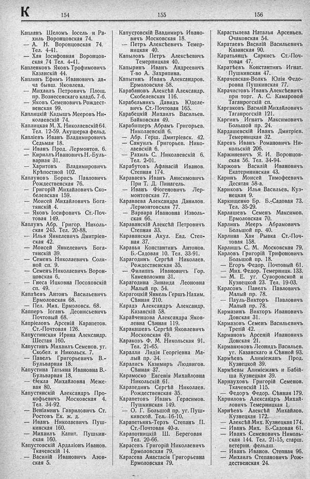

Лист источника 402
Скан

Распознанный текст
К 154 155 156
Капланъ Шеломъ Іосель и Ра-
хиль Воронцовская 74.
— А. Н. Воронцовская 74.
Тел. 4-41.
— Хая Іосифовная Воронцов-
ская 74 Тел. 4-41.
Капленковъ Яковъ Трофимовичъ
Казанскій 44.
Каплинъ Ефимъ Ивановичъ да-
ча бывш. Яковлева.
— Михаилъ Петровичъ Площ.
пр. Вознесенскаго кладб. 7-б.
— Яковъ Семеновичъ Рождест-
венская 99.
Каплицкій Кадышъ Мееровъ Ни-
колаевскій 74.
Каплицкая М. Х. Николаевскій 64.
Тел. 12-59. Акушерка фельд.
Капліевъ Иванъ Владимировичъ
Седьмая 18.
— Иванъ Прод. Лермонтов. 6.
— Кириллъ Ивановичъ Н.-Буль-
варная 31.
— Харитонъ Владимировичъ
Крѣпостной 102.
Каплуновъ Борисъ Павловичъ
Рождественская 76.
— Григорій Михайловичъ Ско-
белевская 159.
— Моисей Михайловичъ Бога-
тянскій 4.
— Яковъ Іосифовичъ Ст.-Поч-
товая 149.
Каплунъ Абр. Григор. Николь-
ская 243. Тел. 20-88.
--- Илья Янкелевичъ Дмитріев-
ская 42.
— Моисей Янкелевичъ Бога-
тянскій 39.
— Семенъ Николаевичъ Соля-
ной сп. 9.
— Семенъ Николаевичъ Ворон-
цовская 6.
— Гнеса Ицковна Посоховскій
сп. 49.
Каплѣевъ Антонъ Васильевичъ
Ермоловская 68.
— Пел. Мих. Ермоловск. 68.
Капперъ Іоганъ Деонисьевичъ
Почтовый 68.
Капріеловъ Арсеній Карапетов.
Ст.-Почтовая 126.
Капустинская Ирина Александр.
Шестая 160.
Капустинъ Михаилъ Семенов. уг.
Скобел. и Никольск. 7.
— Павелъ Григорьевичъ В.-
Бульварная 18.
Капустина Татьяна Ивановна В.-
Бульварная 18.
— Ѳекла Михайловна Меже-
вая 80.
Капустянскій Александръ Про-
кофьевичъ Московская 4.
Тел. 34-92.
— Веніаминъ Гавриловичъ Ст.
Ростовъ Ек. ж. д.
— Иванъ Николаевичъ Пуш-
кинская 160.
— Михаилъ Капит. Пушкин-
ская 160.
Капустовскій Ардаліонъ Иванов.
Ткачевскій 14.
— Василій Ивановичъ Азов-
ская 5.
Капустовскій Владимиръ Ивано-
вичъ Московская 18.
— Петръ Алексѣевичъ Темер-
ницкая 40.
Капыловъ Петръ Алексѣевичъ
Темерницкая 40.
Капыринъ Иванъ Андреевичъ
Т-во А. Захряпина.
Капытинъ Иванъ Александров.
Ермоловская 58.
Карабановъ Алексѣй Александр.
Скобелевская 116.
Карабельникъ Давидъ Юделе-
вичъ Ст.-Почтовая 165.
Карабецкій Михаилъ Васильев.
Байковская 49.
Карабицеръ Абрамъ Григорьев.
Николаевскій 6.
— Абр. Герш. Дмитріевск. 42.
— Самуилъ Григорьев. Нико-
лаевскій 6.
— Рахиль С. Николаевскій 6.
Тел. 2-01.
Карабутовъ Афанасій Иванов.
Степная 174.
Караваевъ Иванъ Анисимовичъ
При Т. Д. Пинагель.
— Иванъ Фіогеновичъ Лер-
монтовская 77.
Караваева Александра Данилов.
Лермонтовская 77.
— Варвара Ивановна Изволь-
ская 66.
Караванскій Алексѣй Петровичъ
Степная 33.
Караванская Акул. Евд. Степ-
ная 37.
Каравья Константинъ Антонов.
Б.-Садовая 10. Тел. 33-91.
Карагодинъ Сергѣй Николаев.
Рождественская 35.
— Филиппъ Ивановичъ Гор.
Каменоломни 31.
Карагодина Зинаида Леоновна
Малый пр. 54.
Карагоцкій Янкель Гершъ Нахим.
Сѣнная 210.
Карадэ Александръ Александр.
Казанскій 58.
Карайченцова Александра Яков-
левна Сѣнная 119.
Каракашевъ Сергѣй Яковлевичъ
Московская 49.
Каракозъ Ф. М. Никольская 91.
Тел. 21-65.
Каралли Лидія Георгіевна Ма-
лый пр. 34.
Каралисъ Казимиръ Людвигов.
Сѣнная 37.
Карамоско Евгенія Михайловна
Никольскій 61.
Карапединъ Сергѣй Николаев.
Рождественская 35.
Карапетовъ Иванъ Герасимов.
Пушкинская 149.
— О. Г. Большой пр. уг. Пуш-
кинской. Тел. 16-10.
Карапетянъ-Терзъ Степанъ П.
Ст.-Почтовая 40-а.
Карапотницкій Ш. Береговая
Тел. 20-66.
Карасевъ Григорій Николаевичъ
Ермоловская 79.
Карасева Анастасія Григорьевна
Ермоловская 79.
Карастылева Наталья Арсеньев.
Очаковская 54.
Каратаевъ Василій Васильевичъ
Казанская 90.
Каратьянцъ Саркисъ Ст.-Поч-
товая 47.
Каратѣевъ Константинъ Игнат.
Пушкинская 47.
Карачевская-Волкъ Юлія Федо-
ровна Пушкинская 77.
Карачистовъ Иванъ Алексѣевичъ
при торг. А. С. Камаровой
Таганрогскій сп.
Каргаковъ Василій Михайловичъ
Таганрогскій 121.
Каргинъ Игнатъ Максимовичъ
Большой пр. 24.
Кардашевскій Иванъ Дмитріев.
Темерницкая 32.
Каревъ Иванъ Романовичъ Ни-
кольскій 206.
Каржиневичъ Я. И. Воронцов-
ская 56. Тел. 34-94.
Каржовъ Василій Ивановичъ
Екатерининская 43.
Каринъ Моисей Тимофеевичъ
Десятая 58-а.
Кариковъ Илья Васильев. Куз-
нецкая 9.
Каркищенко Бр. Б.-Садовая 73.
Тел. 35-29.
Карлашевъ Семенъ Максимов.
Ермоловская 70.
Карлинъ Мееръ Абрамовичъ
Большой пр. 40.
Карлина Хая Рывка Ст.-Поч-
товая 158.
Карлишъ С. М. Московская 79.
Карловъ Григорій Трифоновичъ
Большой пр. 18.
— Егоръ Федор. Почтовый 61.
— Мих. Федор. Темерницк. 133.
— М. Е. уг. Суворовской и
Кузнецкой 23. Тел. 19-03.
Карлсонъ Павелъ Павловичъ
Малый пр. 78.
— Пауль-Викторъ Павловичъ
Малый пр. 78.
Кармазинъ Викторъ Ивановичъ
Донская 31.
Кармазовъ Семенъ Васильевичъ
Третій 42.
Кармановъ Арсеній Ивановичъ
Донская 21.
Карманюковъ Леонидъ Васильев.
уг. Казанскаго и Сѣнной 93.
Кармѣевъ Алиміежанъ Прод.
Кузнецкой 39.
Кармѣевы Алиміежанъ и Бабій-
ша Кузнецкая 39.
Карнауховъ Григорій Семенов.
Ткачевскій 115.
— Федоръ Федор. Сѣнная 179.
Карниловъ Александръ Михай-
ловичъ Темерницкая 1.
Карнѣевъ Алексѣй Михайлов.
Кузнецкая 172.
— Алексѣй Мих. Кузнецкая 174.
— Иванъ Мих. Б.-Садовая 61.
— Иванъ Семеновичъ Николь-
ская 144. Тел. 21-15, старш.
ветерин. фельдш.
— Иванъ Иванов. Степная 96.
— Михаилъ Степановичъ Рож-
дественская 24.